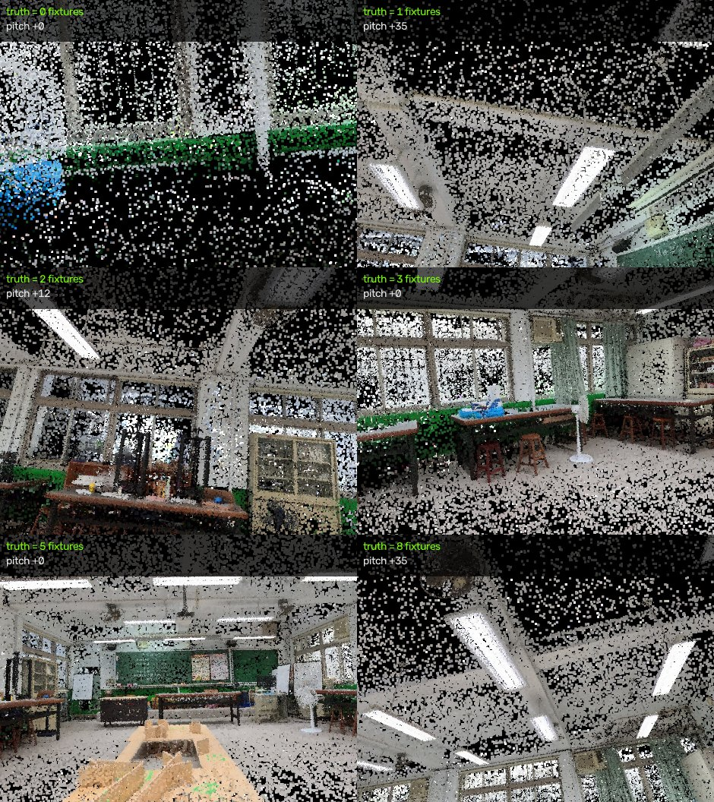
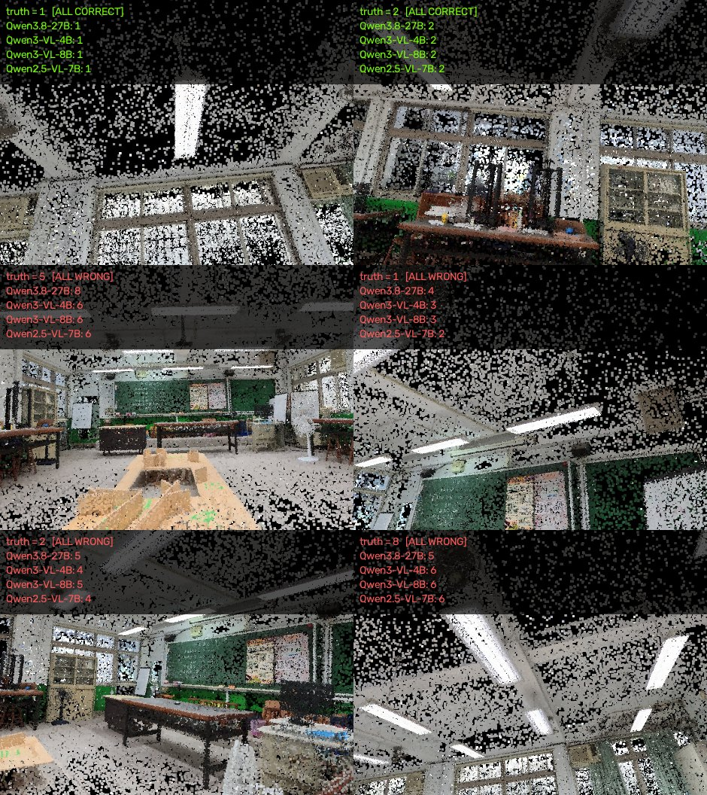
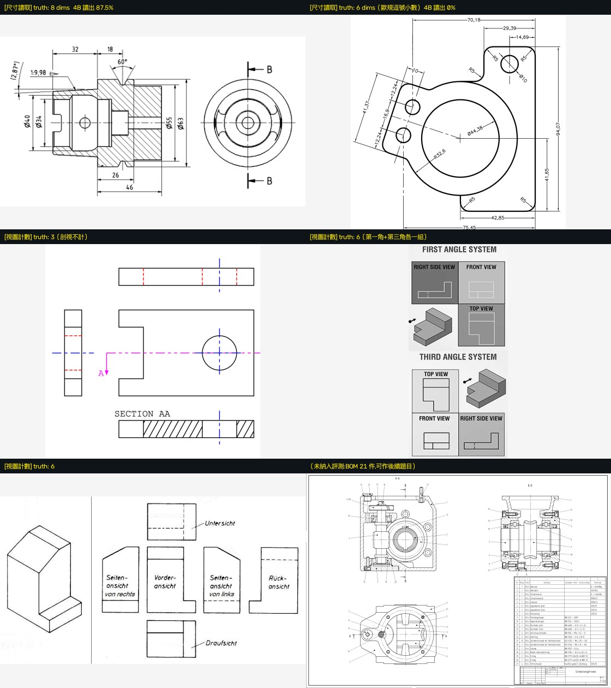
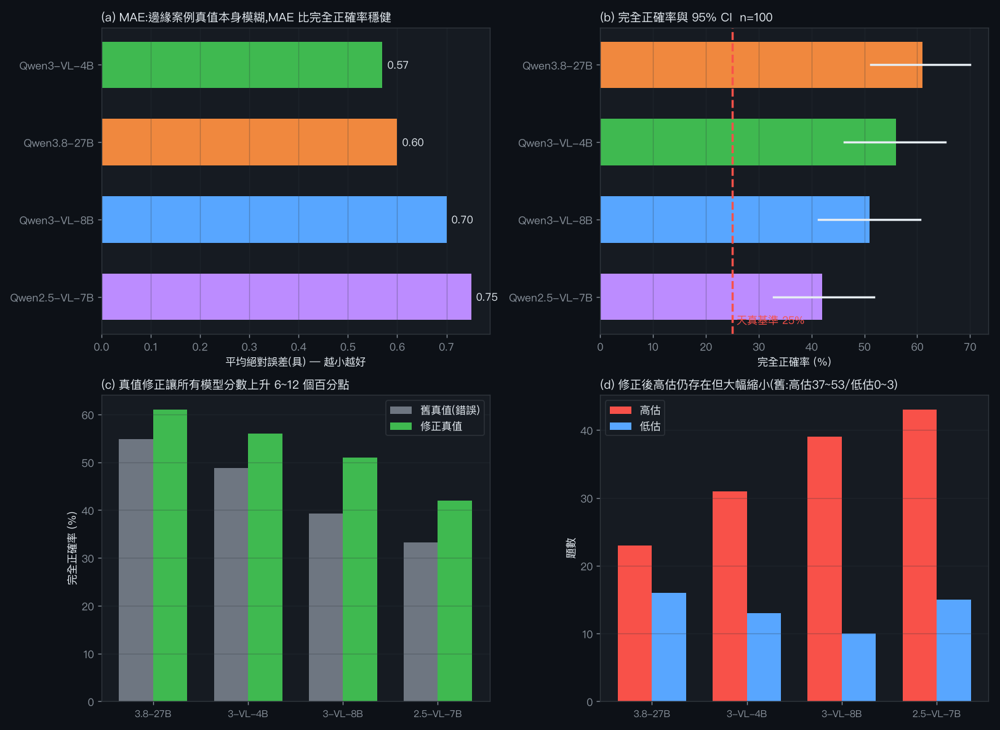

本次評測的核心設計來自一個教訓：先前的潔牙 zone 評測看似有排名， 實際上「不看圖一律回答 lower_front」就能得 99.4%，勝過所有模型—— 測試集 154 個正例中有 153 個是同一個答案。因此本次每個領域都先計算天真基準。
| 領域 | 題數 | 真值來源 | 天真基準 |
|---|---|---|---|
| 工程圖尺寸讀取 | 2 | 圖上印的標註（外部 Wikimedia 圖） | 0% |
| 正投影視圖計數 | 3 | 圖面配置 | 66.7% |
| 教室燈具計數 | 100 | 3DGS 點雲實例分解 | 25.0% |
教室這一項由點雲幾何自動出題與標答：一具燈具算「看得見」的條件是 它在畫面上贏得 z-buffer 的像素數 ≥ 門檻（z-buffer 本身已處理遮擋）。 用 60/120/250 三組門檻各算一次，三者一致才收。
試 159 個候選視角 → 收滿 100 題



70,18、29,39、
Ø44,38、R32,6——歐規以逗號當小數點。
Qwen3.8-27B 忠實照著讀出這些字串，我的評分程式只收 int/float，
整批丟棄後判它 0 分。模型讀對了，錯的是量尺。

| 模型 | 完全正確 | 95% CI | 誤差≤1 | MAE | 秒/張 | 峰值記憶體 |
|---|---|---|---|---|---|---|
| Qwen3.8-27B | 61.0% | [51.2, 70.0] | 83.0% | 0.60 | 5.42 | 20.5 GB |
| Qwen3-VL-4B | 56.0% | [46.2, 65.3] | 87.0% | 0.57 | 1.12 | 4.3 GB |
| Qwen3-VL-8B | 51.0% | [41.3, 60.6] | 82.0% | 0.70 | 1.89 | 6.8 GB |
| Qwen2.5-VL-7B | 42.0% | [32.8, 51.8] | 84.0% | 0.75 | 2.23 | 6.7 GB |
| 天真基準 | 25.0% | — | — | — | 0 | 0 |
| 比較 | A 獨對 | B 獨對 | 雙尾 p | 判定 |
|---|---|---|---|---|
| Qwen3.8-27B vs Qwen2.5-VL-7B | 28 | 9 | 0.0026 | 顯著 |
| Qwen3-VL-4B vs Qwen2.5-VL-7B | 23 | 9 | 0.0201 | 顯著 |
| Qwen3.8-27B vs Qwen3-VL-8B | 18 | 8 | 0.0755 | 不顯著 |
| Qwen3-VL-8B vs Qwen2.5-VL-7B | 19 | 10 | 0.1360 | 不顯著 |
| Qwen3.8-27B vs Qwen3-VL-4B | 10 | 5 | 0.3018 | 不顯著 |
| Qwen3-VL-4B vs Qwen3-VL-8B | 10 | 5 | 0.3018 | 不顯著 |
修正真值後層級分得比初版更淺：只有 27B 與 4B 顯著勝過 7B， 其餘配對都不顯著。參數量與準確率不是單調關係—— 8B（5.4 GB）輸給同世代的 4B（2.9 GB）。
| 模型 | 高估 | 低估 | 每題淨偏移 | 真值 0 的 25 題答對 |
|---|---|---|---|---|
| Qwen3.8-27B | 23 | 16 | +0.16 | 24 |
| Qwen3-VL-4B | 31 | 13 | +0.27 | 19 |
| Qwen3-VL-8B | 39 | 10 | +0.44 | 14 |
| Qwen2.5-VL-7B | 43 | 15 | +0.35 | 2 |
| 模型 | 工程圖尺寸 n=2 · 基準 0% |
視圖計數 n=3 · 基準 66.7% |
教室計數 n=100 · 基準 25.0% |
秒/張 | 記憶體 |
|---|---|---|---|---|---|
| Qwen3.8-27B | 93.8% | 33.3% | 61.0% | 5.42 | 20.5 GB |
| Qwen3-VL-4B | 43.8% | 100% | 56.0% | 1.12 | 4.3 GB |
| Qwen3-VL-8B | 93.8% | 100% | 51.0% | 1.89 | 6.8 GB |
| Qwen2.5-VL-7B | 93.8% | 66.7% | 42.0% | 2.23 | 6.7 GB |
| 模型 | 01 刀柄 召回/精確 | 02 托架板 召回/精確 | 平均召回 |
|---|---|---|---|
| Qwen3.8-27B | 87.5% / 70.0% | 100% / 57.1% | 93.8% |
| Qwen2.5-VL-7B | 87.5% / 70.0% | 100% / 52.9% | 93.8% |
| Qwen3-VL-8B | 87.5% / 63.6% | 100% / 41.2% | 93.8% |
| Qwen3-VL-4B | 87.5% / 77.8% | 0% / 0% | 43.8% |
三個模型都能可靠讀出標註尺寸（召回 93.8%），對 2D→CAD 路線是實用訊號。 但精確率只有 41~78%——它們會多讀出圖上不存在的數字， 接進自動建模流程前必須有尺寸合理性檢核。4B 在 02 號圖完全讀不出來（回傳空集合）， 是唯一的硬失敗。只有 2 題，不足以排名。
| 模型 | 03（真值 3） | 05（真值 6） | 06（真值 6） | 正確率 |
|---|---|---|---|---|
| Qwen3-VL-4B | 3 | 6 | 6 | 100% |
| Qwen3-VL-8B | 3 | 6 | 6 | 100% |
| Qwen2.5-VL-7B | 3 | 6 | 5 | 66.7% |
| Qwen3.8-27B | 2 | 3 | 6 | 33.3% |
05 號圖的真值原本被我依 MANIFEST 文字寫成 3，實際看圖才發現它畫的是 第一角法與第三角法各一組三視圖，共 6 個。 更正後 4B 與 8B 從 66.7% 升到 100%、27B 從 66.7% 降到 33.3%—— 一個真值錯誤就反轉了排名（僅 3 題，本來就極度敏感）。
本次評測過程中，有四次我先懷疑被測對象、實際上錯的是量尺：
| 症狀 | 真相 |
|---|---|
| 3DGS 針狀比例 59.8% 且持續上升 | 監控印 max/min、損失罰 max/median，真值 0.03%（差 1993 倍） |
| 潔牙 zone 排名有明顯差距 | 測試集 153/154 是同一答案，天真基準 99.4% 勝過所有模型 |
| Qwen3.8-27B 工程圖得 0 分 | 評分只收 int/float，模型回傳 "70,18"（歐規逗號小數點）被整批丟棄 |
| 模型答「6 個視圖」被判錯 | 05 號圖同時畫第一角法與第三角法各一組三視圖，真值就是 6，錯的是我照文字描述寫的答案 |
| 教室計數「所有模型系統性高估」 | 可見性定義錯誤：用「高斯可見比例」而非「畫面像素面積」， 燈具自己遮住自己導致比例天生偏低。一張圖 7 具燈具被算成 1 具。此錯誤已發佈後才發現 |
tube 改成 fixture
就改變了整個題目的判定；
(2) 用約束解碼修正「從不回答 0」的偏誤（先問「有沒有」再問「幾個」），
這不需要微調。若之後真要做（等上排刷牙標註收齊後）：LoRA 微調 Qwen3-VL-4B、 Colab A100（本機 MLX 的 GRPO 實測不收斂，需 CUDA）、 每段必須 <45 分鐘並立刻下載——A100 session 實測 60 分整會被回收。
~/3d/gauss-explorer/：
gen_room_bench.py（自動出題+三門檻過濾）·
run_room_bench.py（跑測試）·
broad_eval.py（多領域+天真基準）